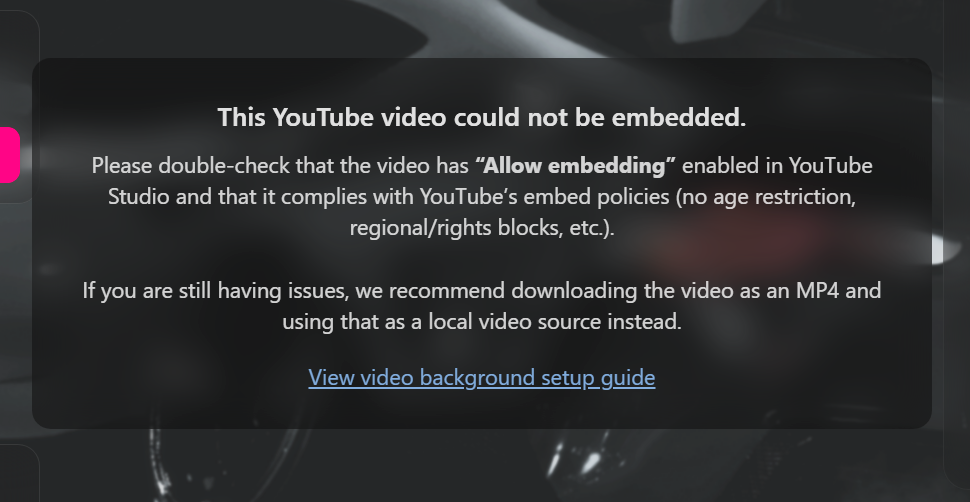

🎨 Customization Guide¶
You can customize the look and feel of the loading screen by editing the config.json file located in the html directory of the package.
This guide walks you through the most important configuration options.
📁 Remember: Place any images, videos, or audio files inside the
html/assets/folder to ensure they load correctly in the UI.
Overall Theme Color¶
Customize the main highlight UI color:
"selectedColor": "#ff007b",
Color Format
Accepts both hex and RGB values.
Background Options¶
You can use a static image or a video as your background.
If both are provided, the video always takes priority.
📷 Static Image Background¶
"backgroundImage": "./assets/path/to/background.png",
"backgroundVideo": ""
Static Image Notes
If you want to use a static image, leave "backgroundVideo" empty.
Even static images receive subtle ambient movement and lighting effects for depth.
🎥 Video Background (Local WebM)¶
"backgroundVideo": "./assets/path/to/bg.webm"
Best Performance
Local video files load the fastest and avoid any YouTube embedding restrictions.
Supported formats:
.webm(recommended)
Place your files inside:
html/assets/
📺 Video Background (YouTube)¶
"backgroundVideo": "https://www.youtube.com/watch?v=abc123"
Video Takes Priority
If "backgroundVideo" is set, the static "backgroundImage" will not be used.
⚠️ YouTube Embed Requirements & Error Handling¶
YouTube videos must meet several requirements to play inside FiveM's Chromium-based UI.
If the loading screen detects an embedding issue, it will automatically:
- Show a graceful error modal, and
- Fall back to your static background image with animation.
Required YouTube Settings¶
Make sure your video has:
- Embedding enabled
(YouTube Studio → Video → Settings → Permissions → “Allow embedding”) - No age restriction
- No region/copyright blocks
- Public or unlisted visibility
If any of these are missing, YouTube will block the embed request, and a failure modal will appear.
How to Fix YouTube Videos That Won't Play¶
- Open YouTube Studio
- Click Content
- Select the video used in your config
- Check the Restrictions column
- Fix any of the following issues:
- Age-restricted → remove restriction
- Region blocked → allow all locations
- Embedding disabled → enable permissions
The UI will automatically detect errors (Invalid Frame 153, blocked iframe, etc.) and show helpful guidance.
Final Fallback: Use a Local WebM (Recommended)¶
If your video still refuses to embed, even after correcting settings:
Download the video and use a local .webm file instead.
This completely bypasses YouTube’s restrictions.
Place the file here:
html/assets/webm/background.webm
Then update your config:
"backgroundVideo": "./assets/webm/background.webm"
This is the most reliable solution and prevents future YouTube policy issues.
Automatic Fallback Behavior¶
If your YouTube or local video fails:
- A modal explains the issue
- A link to troubleshooting docs appears
- The background animates using your static
"backgroundImage"
This ensures the loading screen remains usable even during media failures.
Preview

Summary of Background Priority¶
| Priority | Type | Notes |
|---|---|---|
| 1 | YouTube Video | Must allow embedding; otherwise fallback |
| 2️ | Local WEBM | Fastest + most reliable |
| 3️ | Static Image | Used when no video or video fails |
Example Configuration¶
{
"selectedColor": "#ff007b",
"backgroundImage": "./assets/bg.jpg",
"backgroundVideo": "https://www.youtube.com/watch?v=abc123"
}
Where to Go Next¶
- Configure your watermark → Watermark page
- Customize social headers & custom icons → Social Headers page
- Create formatted rules → Rules Panel page
- Add your team panel → Team Panel page
- Build a gallery grid → Gallery Grid page
- Enable the keyboard overlay → Keyboard Overlay page
- Configure the music player → Music Player page